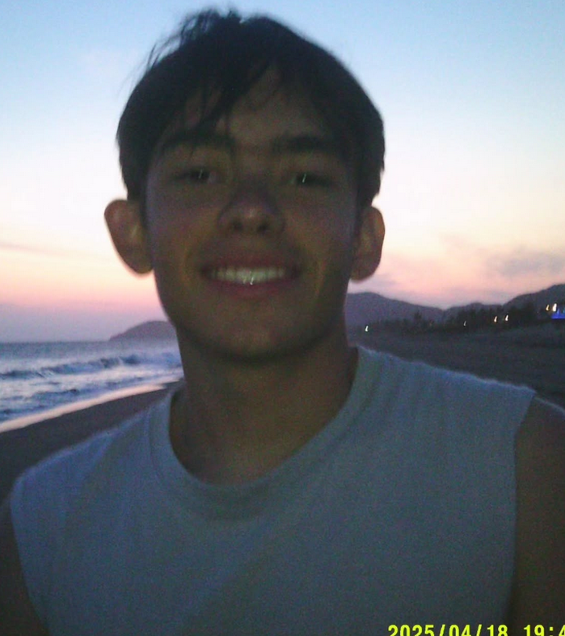

Perfil y presentación
Bienvenida a mi mundo
Aquí va tu foto de perfil y una breve descripción de lo que estás haciendo actualmente (tu rol, proyecto principal, estudio, etc.).

Resumen actual
Holasakhjkkkkkkkkkkkkkkkkkkkkkkkkkkkkkkkkkkkkkkkkkkkkkkkkkkkkkkkkkkkkkkkkkkkkkkkkkkk